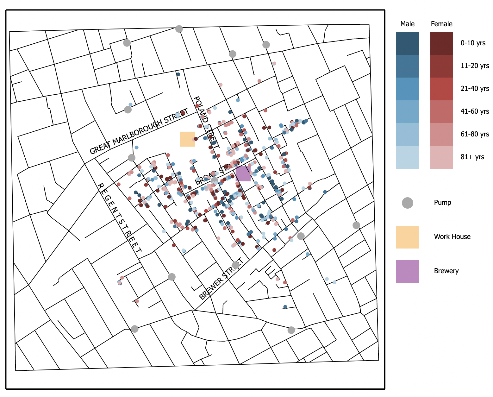
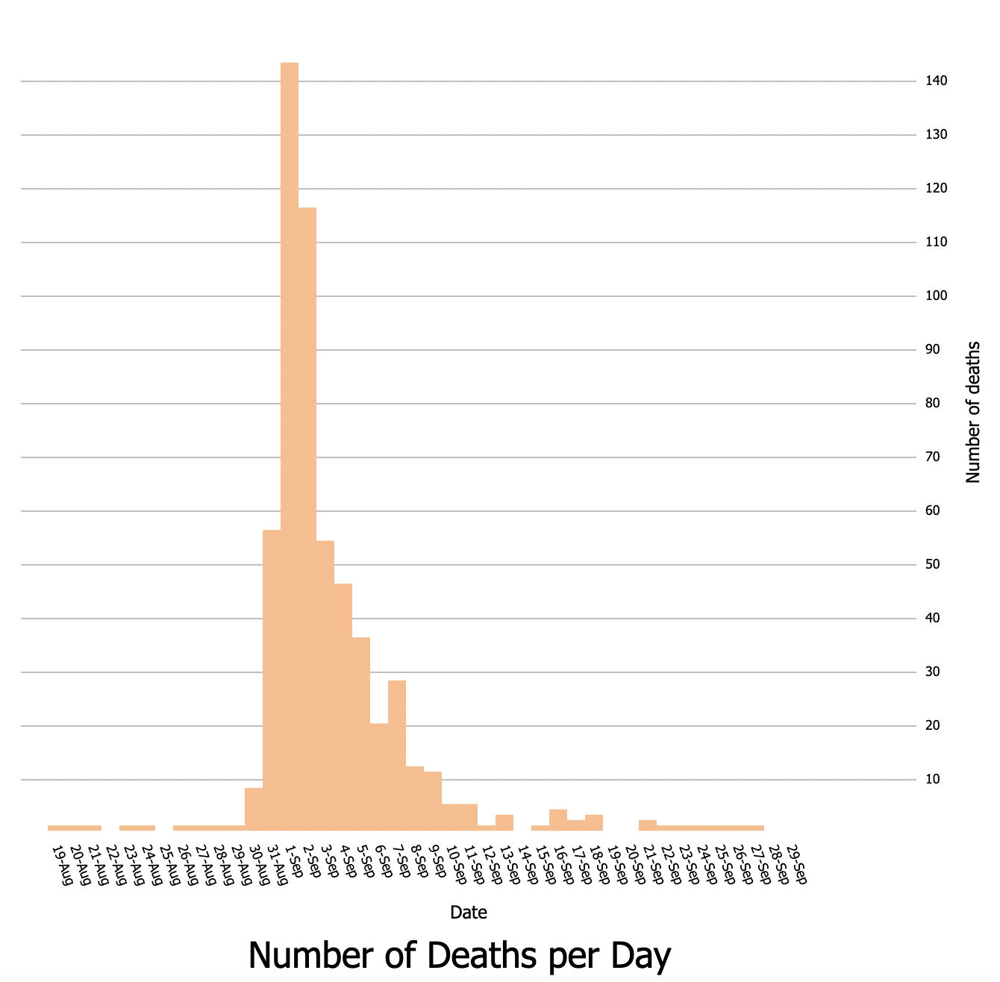
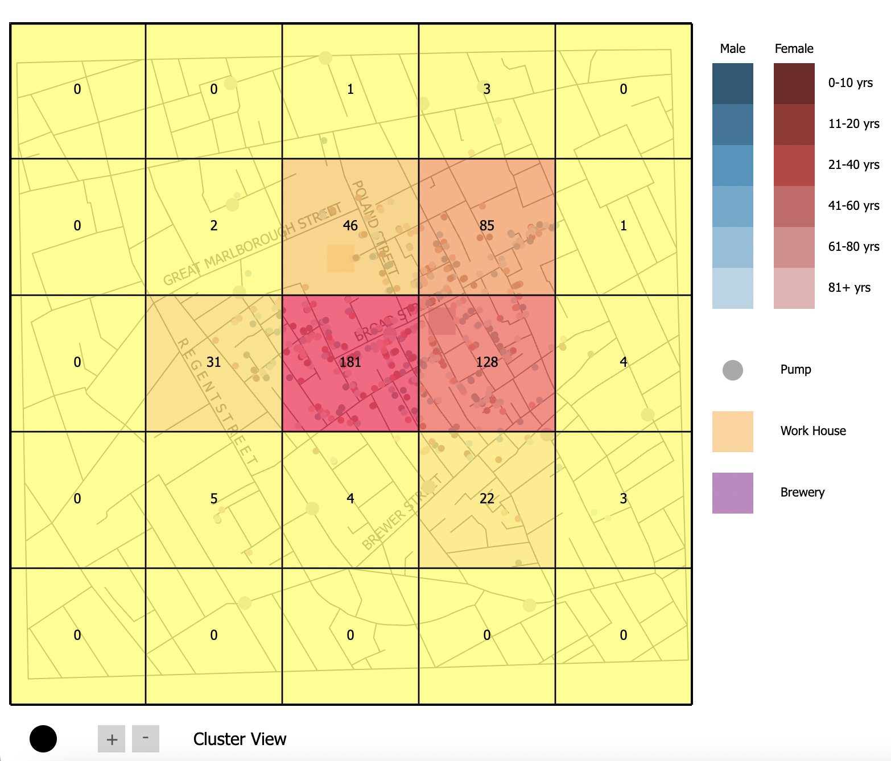

This project was created for a data visualization course. The idea was to create a visualization of the cholera outbreak in 19th century London by recreating and building upon John Snow's map of the outbreak.
Line segments that make up the map of the general area, locations of pumps, deaths and relevant information (location, day, gender, age), and an estimated population age distribution in the setting were given. Some additional points of interest (street names, work house, brewery) were located from John Snow's map itself.
The very first thing I did to get started on this project was try to create the map. This went hand-in-hand with doing a simple plot of the deaths and pumps on the map.
My reasoning in doing this before any planning on the actual visualization was that, because I am still new to D3, and because of the limited time, it would put me at ease to see some sort of code-related progress as early as possible.
A problem I ran into was that I was trying to append multiple separated line segments.
At first, I used a for loop to append the many different lines. I then learned how to use .enter().append() in place of a for loop.
Points were easy after plotting the lines.From here I had to start thinking about my design and how to convey the required information on the map (age and gender). Initially I had thought about using color for one of the variables and size for the other.
This is the most obvious way I could think of to illustrate two additional variables onto a scatterplot. But there were some problems with this. Size would make the map very cluttered, and it was also counter-intuitive. Age does not have an intuitive relationship with size.
I decided on using color for both variables. Blue/red would denote gender (male/female respectively) and brightness would denote age.
Intuitively, people view blue and red as male and female. I also perceieved lighter colors as looking "older."
I made the pumps gray to stand out from the map while also allowing the main attention to be placed on the deaths.

My next task was to create a timeline for the deaths. I decided on using a bar chart (more of a histogram in this case) for this.
I could have used a connected dot plot, but I figured that bar charts would work better with the "hover-over" functionality, which will be discussed later. I placed the bar chart to the right of the map, so that both could easily be viewed at the same time.

I then had to make the bar chart interactive. Hovering over a certain bar should display the points up until that date.
This was rather difficult. The main challenge was getting the bar chart to display points UNTIL that day, rather than ON that day.
I ended up accomplishing this by using nested for loops to create an array deaths_by_day, which grouped the deaths, along with their location and other info, by day.
Surprisingly, the challenging part here was combining zooming and panning. Because both used transform() functions, they seemed to override each other.
For example, the zoom transform would set the coordinates back to their default values. I ended up having to explicitly set the coordinates to their current values within the zoom transform to work around this.
The last challenging aspect of the project was clustering. My plan for showing clusters was to display gridlines on the map itself, and then portray the number of deaths in each cell both through a color gradient and a printed number.

Last, I had to show the general distributions of age and gender. I figured that bar charts would be a perfectly good way to illustrate this.
I needed side-by-side bars to show how the general age dsitribution compared with the age distribution of the victims.
I chose yellow and purple as contrasting colors for the age distributions, and I again chose blue and red to represent male and female.
To show the work house and brewery on the map, I used yellow and purple squares. I wanted to choose two contrasting colors.
From here, I just polished up some small details of my design and checked for color-blindness issues with Color Oracle.
I was able to infer a great deal about the nature of this outbreak based on the visualization.
Most of the deaths occured around the Broad Street pump. None of the other pumps had a high concentration of deaths around them.
Additionally, I can conclude that children and elderly people were disproportionately affected, which makes sense considering that these groups generally have weaker immunity.
The disease targeted males and females at about the same rate.
This project was overall very difficult but a learning experience. I'm happy with how it turned out and I'm proud of myself for learning D3 in such a short time frame.
Video Demonstration
References
Holtz, Yan (2018a). Basic scatterplot in d3.js. Retrieved oct 15, 2022, from https://www.d3-graph-gallery.com/graph/scatter_basic.html.
Johnson, Ian (2016). D3 behavior.drag example.
Schmidt, KJ (2019). D3.js mouse-over effects for your scatter plot. Retrieved oct 15, 2022, from https://medium.com/@kj_schmidt/hover-effects-for-your-scatter-plot-447df80ea116.
Singh, Sundar (2015). d3 | zoom and panning. Retrieved Oct 15, 2022, from https://bl.ocks.org/eesur/c8ddc916e07af6e0481a.